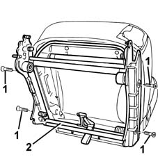
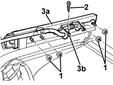

7050A99 rear seat support/guides - r r with rear seat removed
- Path
- Procedures > 70 FITTINGS > 7050 REAR SEATS > 7050A rear seat assembly > 7050A99 rear seat support/guides - r r with rear seat removed
- Kind
- repair procedure (removal / refitting; the operation number is the code)
- Applies to
- all engines; all production periods
- Interactive page
- https://sloeber94.github.io/elrnDB-fMltpl/en/#/2892250
Applies to: all engines; all production periods
 Removing
Removing
 Refitting
Refitting1. Undo the bolts.
2. Remove the seat mounting.

Applies to: all engines; all production periods
If the central rear seat guides have to be removed, proceed as follows.
1. Undo the nuts.
2. Remove the split pin.
3. Disengage the guide (3a) from the seat slide lever (3b) and remove it.

Applies to: all engines; all production periods
Refitting
RemovingCheck that the mounting and guides are undamaged.
If removed, fit the guide and engage it in the seat slide lever; refit the split pin and tighten the nuts.
Fit the seat mounting.
Tighten the screws.